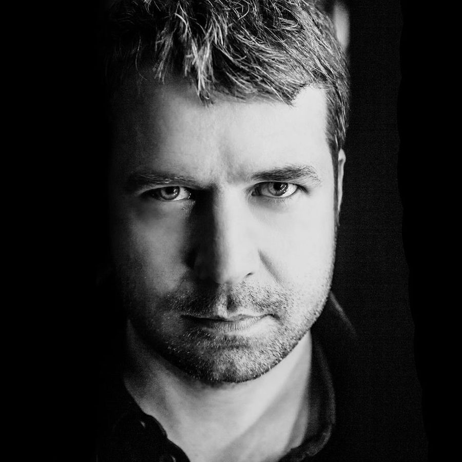

Lange: Revitalising trance


2007 has been a landmark year for UK trance icon Lange, as it sees him celebrating 10 years in the game. Having gone through something of a career crisis a few years back, it also sees him sinking his teeth back into the trance sound with a reinvigorated passion. “The genre has long since shrugged off that generic formula that, ironically, I was partly responsible for engraining on the masses in the first place,” he tells ITM. When you think of it that way, who better to revitalise the sound than someone who helped create it? After all, you’ve gotta know the rules before you can break them!
Hi Lange, greetings from inthemix in Australia. How are you, and where in the world are you at the moment?
Hi, I’m very well thanks. It’s midweek and I’m in Cardiff (Wales) which I moved to a couple of months ago.
Have you had an enjoyable 2007 so far?
It’s been a busy, hectic year, but so far a very successful one! I decided in January this year would be the one I finally nailed the job of writing my debut album. I set myself quite a tough deadline; to release it 10 months later to coincide exactly with my 10 year anniversary in the music industry. That caused me a bit of stress at times, as inevitably there were ‘dry’ moments where I wasn’t getting anything written and the clock was ticking, but particularly over the summer, I found plenty of inspiration and ideas and finished the album on schedule.
Celebrating a decade in dance music, does it still excite you to be involved with it all?
I must confess to hitting quite a state of boredom a few years ago, which resulted in a dry spell. It wasn’t that I couldn’t write anything; I could have continued churning out the same style of tracks, but I was needing fresh inspiration. For the past couple of years though, I’ve been feeling really ‘back on it’! Now, the dance scene feels revitalised after quite a stagnant period. For me personally the walls have come down, and genres are blending more than ever before. This is reflected in my sets too which have become very varied. Be it, trance, techno, electro, house, tech, or any combination thereof.
The biggest thing for you this year is obviously the fact that your debut artist album is going to hit the stores, and it’s appropriately named ‘Better Late Than Never’. Tell us a little bit about what went into creating it, and how long you’ve been working on it for?
It took me 9 months to write the new material. I decided, as it was to be released exactly a decade on from me first signing my record deal with Positiva in October, 1997, that I’d add on a second disc which collates some of my older singles and remixes. It’s very much wrapping up the old sound of ‘Lange’ and presenting it with the ‘new’. I co-wrote with several people on the album, mainly song writers as I’m not really a vocal writer. People I worked with for the new material include my good producer friend Andy ‘Pulser’ Perring, who sang on one of the tracks, Katie Marne – who also co-wrote ‘Drifting Away’ that features on CD2 – and vocalists Sarah Ozelle and Sarah Howells from the UK, and Jennifer Karr from Los Angeles. Sarah Howells is the vocalist on ‘Out Of The Sky’ and I was very lucky to find her in Cardiff after a friend at my new studio complex recommended her. It was the last track to be written for the album and I think it turned out to be one of the best!
What we can expect from the album, were you pursuing something that was very club orientated, or did you go down the path of creating something a little more downbeat for home listening?
It’s a bit of both really. There are a lot of club orientated tracks, but I wrote the album as a piece of work to listen to at home too, and there are a few more chilled out tracks on there. In my opinion it draws influence from progressive, trance, electro, techno, general electronica and indie rock. Through writing it, my main concern was actually whether or not the varied tracks I had written would gel together to make a smooth flowing album. I think I pulled it off, but arranging the playlist order was critical. You can check out some of the music on the album by visiting the dedicated minisite at www.langealbum.com.
Your hit from this year, ‘Angel Falls’, as well as your new single ‘Songless’, are both a really interesting fusion of electro, trance, tech and even progressive. Have you been getting a big kick out of bringing these different sounds together?
Yes. This is what’s given me a fresh outlook on the dance scene. I’m enjoying time in the studio as much as I did in the early days when I first started writing. The key thing that’s changed for me over the years – in particular, since I started DJing 6 years ago – is a shift to groovier, more rhythmic and bass orientated tracks, rather than just melody. I still love my emotional melodies but I prefer to use these ideas in more subtle ways.
You’ve also had another massive hit in the last 12 months with your Gareth Emery collaboration ‘Another You, Another Me’. That in itself was one of the most striking examples of the electro-trance sound, and it got picked up a lot around the world. Where you really happy with how this was received?
Yes, we were both really pleased with the reactions to the track worldwide! We felt we’d come up with a couple of pretty good inventive tracks before, but knew this was our strongest when we finished writing it. We didn’t realise quite how big it would become though!
Some of your biggest hits earlier in your career, like ‘Drifting Away’ and your remix of DJ Sakin & Friends ‘Protect Your Mind’, were really good examples of the storming big-room euphoric trance sound, and it won you a lot of success. Obviously in recent years you’ve tried to take trance in fresher directions, and your sound is a lot more underground. Did you get bored with where trance was a few years ago?
Yeah, I touched on it before. I did get bored for a while and a little lost with what to do next. I couldn’t bring myself to write music I wasn’t into, so I had to take stock and find a new direction. I got a helping hand with the rise of electro, and going to a few techno and minimal nights threw some more inspiration into the pot too. Part of the problem was, I personally don’t think a lot of the older style trance has ‘dance-ability’. Yes the melodies are great, but for me a good groove is essential. That’s what I’m trying to blend into some of my tracks at the moment; emotional, bass driven, rocking-but-in-a-more-progressive-way trance!
With all this in mind, what’s your personal evaluation of where trance is in 2007, and what can we expect in 2008? As someone who has stuck around and maintained your success since the heady days of 1998/1999, give us your opinion!
OK, I will! Trance today is wide open. What was becoming a boring, same-old experience has grown some balls and is shouting out again. It’s flirting with other genres like never before and is much better for it. When someone describes a track as being ‘trance’ now, you don’t quite know what it will sound like. The genre has long since shrugged off that generic formula that, ironically, I was partly responsible for engraining on the masses in the first place! 2008 promises to be even better than 2007; trance is back, in a big way!
You’ll be hitting Australia soon, what can we expect?
I’m over headlining the Defcon festival in Melbourne. It’s the first one ever and they’re expecting around 8,000 people so it’s shaping up to be a big event. I haven’t played in Melbourne since Summadayze a couple of years ago, so I’m really looking forward to it. Then I’ve got a couple of days there to catch up with friends before heading over to Indonesia for a three-date tour.
Lange’s album ‘Better Late Than Never’ is available now. He plays one Australian show, heading to the Defcon festival in Melbourne this month. Click HERE for the full rundown on our inthemix festival page.